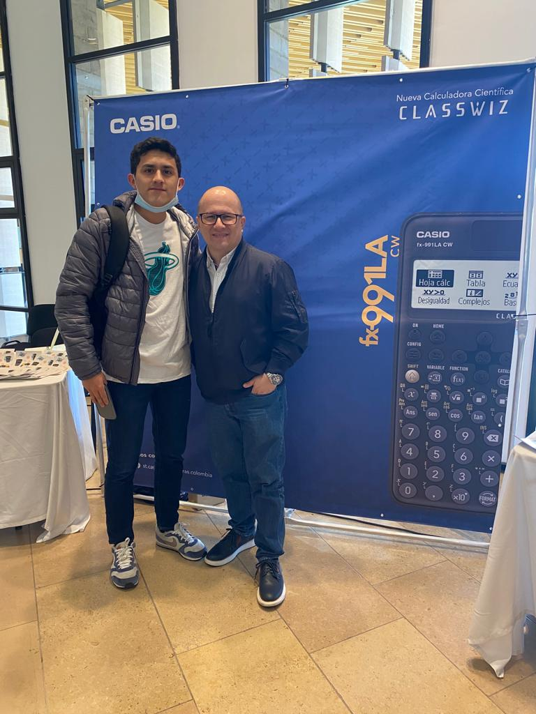
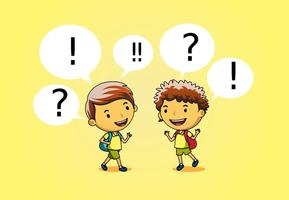
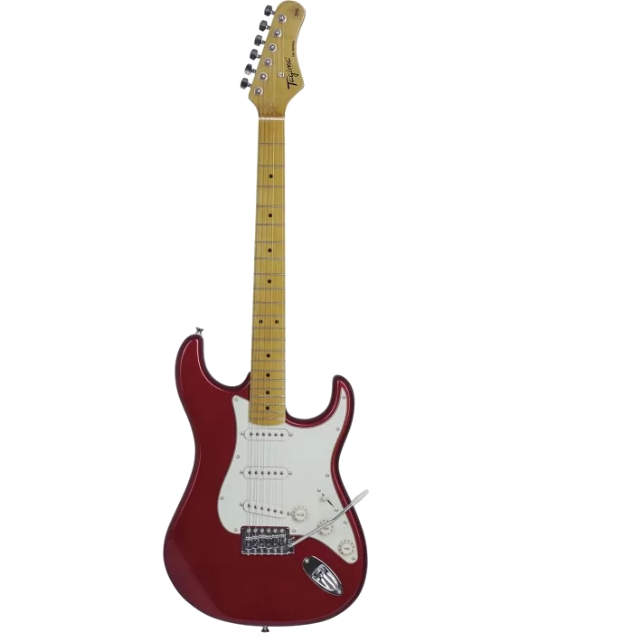

¿Quien soy?
Mi nombre es Miguel Ángel Feo Merchan, tengo 18 años y estudio ingenieria informatica, mis mayores hobbies son tocar guitarra, jugar baloncesto, jugar videojuegos, y escuchar musica, principalmente el rock.

Mis inicios y educacion en el jardin
Naci el 24 de noviembre de 2004 en Barranquilla, vivi alla por 1 año, luego trasladaron a mi papa a cali otro año, y finalmente lo trasladaron a Bogota donde llevo viviendo toda mi vida. Cuando tenia 4 años ingrese en el jardin. En la epoca del jardin, uno aprende las cosas mas basicas tales como socializar, aprender a conocer a las personas en cierto modo, y cosas como numeros y letras, no recuerdo muy bien lo que aprendi en esas epocas, pero en la educacion en el jardin fue cuando me relacione por primera vez, es decir mis primeras amistades para ese entonces. En el jardin se formaron las bases de lo que hoy conozco como socializar. Cuando cumpli 5 años entre al colegio en el que duraria todos los años de mi educacion, ingrese a ese colegio en transicion. Entre transicion y primero hice mis primeros amigos, y varios de ellos siguen presentes hasta dia de hoy

Educacion Primaria
Luego de haber conocido amigos en preescolar, entre a primaria, donde fui aprendiendo cada vez mas que avanzaba de curso, sobre diversas cosas academicas y personales. En los primeros años de primaria fui aprendiendo mas sobre como relacionarme con las personas, a su vez aprendi mas sobre lo que me gustaba hacer, en mis inicios de primaria vi una guitarra electrica y se convirtio en una de mis metas algun dia aprender a tocar. En estas epocas me gustaba jugar futbol y estaba en cursos de natacion y de tenis. A mediados de primaria, en cuarto grado por fin me decidi por aprender a tocar guitarra, pero por diversos factores deje de tocar por unos años. En quinto grado, luego de haber pasado por varios deportes, ninguno me habia convencido, tuve mi primer acercamiento con el basketball, deporte que jugaria desde primaria hasta grado 11. En grado 5 logre hacer mas amigos, y logre aprender muchas cosas mas sobre lo que me gusta y pude notar por primera vez en que era bueno y en que era malo academicamente.

